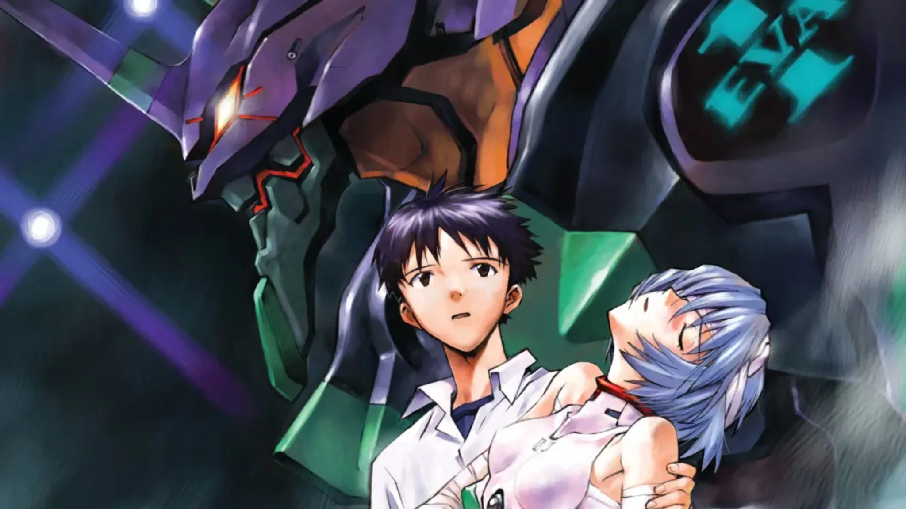
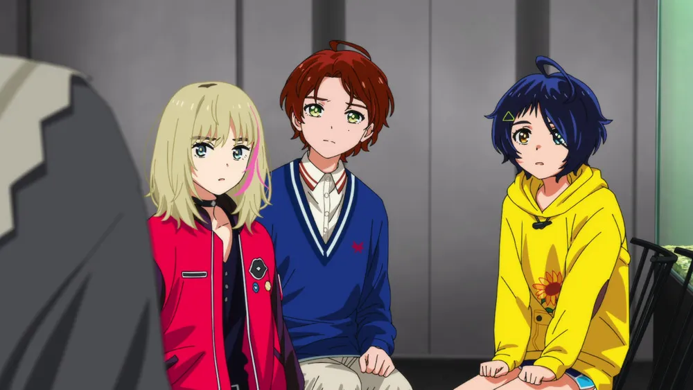
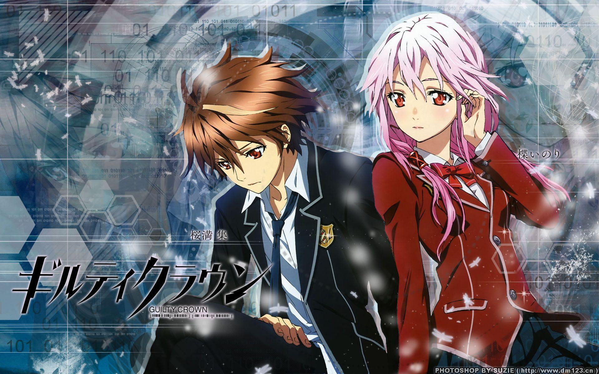
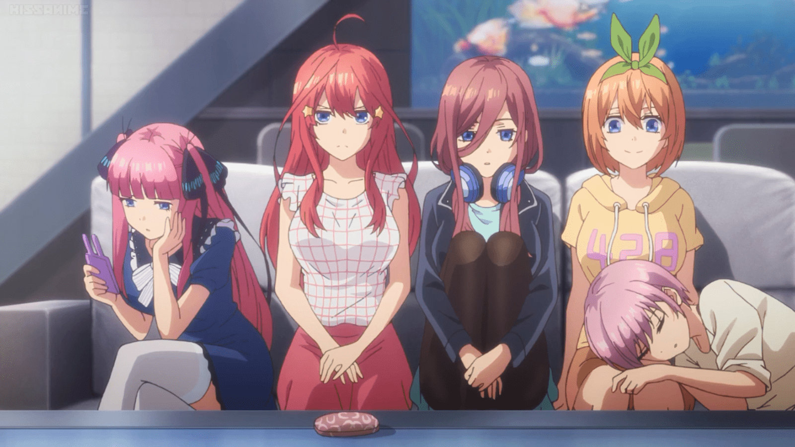

SMASH Senpai
Top 10 Anime Endings That Divided the Fanbase
Not every anime ending brings closure. Some finales ignite chaos — sparking endless arguments, breaking the internet, and splitting fanbases into opposing sides that never fully agree.
These are the endings that left viewers confused, angry, heartbroken, or questioning everything they just watched. Some were bold creative risks. Others felt rushed, unfinished, or completely disconnected from what came before.
What makes these endings unforgettable isn’t just controversy — it’s how strongly people reacted. Years later, fans are still debating whether these finales were misunderstood masterpieces or catastrophic failures.
This list ranks the Top 10 Anime Endings That Divided the Fanbase — stories whose conclusions sparked outrage, confusion, and endless discussion. Love them or hate them, these endings refused to be forgotten.
Sponsored
#1 Neon Genesis Evangelion
Neon Genesis Evangelion is arguably the most controversial anime ending of all time. When the series concluded, fans expected answers — explanations about Angels, the Human Instrumentality Project, and the fate of the world. Instead, they were given an abstract psychological breakdown that felt more like therapy than a finale.
The final episodes abandon traditional storytelling almost entirely. Battles disappear, plot threads dissolve, and the focus shifts inward to Shinji Ikari’s fractured mind. Internal monologues, surreal imagery, and repeated questions about self-worth replace action and resolution. For many viewers, it felt confusing, unfinished, or even insulting.
What divided fans was intent. Creator Hideaki Anno wasn’t trying to conclude the story — he was dissecting the emotional damage behind it. Evangelion’s ending argues that understanding oneself matters more than external answers. The congratulatory scene, mocked and debated for decades, represents self-acceptance rather than victory.
Some fans consider Evangelion’s ending a misunderstood masterpiece. Others see it as a complete narrative failure that abandoned its audience. The backlash was so intense that it eventually led to The End of Evangelion, a darker, more literal response to fan outrage. Love it or hate it, Evangelion proved that an ending doesn’t need clarity to leave a permanent mark.

play anime smash or pass here (not sponsored)
SMASH SENPAI – Smash or Pass#2 Death Note

Death Note’s ending remains one of the most fiercely debated conclusions in anime history. For many fans, the series peaked during the psychological duel between Light Yagami and L. When L died and Near took his place, the tone shifted — and the ending only intensified that divide.
Light’s final downfall was intentionally humiliating. The once-calculated god of the new world is exposed, panicking, screaming, and desperately clinging to life. Supporters of the ending argue this was the point: absolute power stripped away reveals a terrified human, not a righteous savior.
However, many viewers felt betrayed. They believed Light’s defeat relied too heavily on Near’s convenience and luck rather than intellect. Compared to L, Near felt underdeveloped, making Light’s loss seem rushed or unearned. This led to claims that Death Note lost its identity in its final stretch.
The controversy stems from perspective. Was Death Note a cautionary tale about corruption, or a battle of wits that promised a smarter conclusion? The ending answers clearly — evil must collapse under its own arrogance. Whether fans accept that message or not, Death Note’s finale ensured the series would be debated long after the final name was written.
#3 Darling in the Franxx

Darling in the Franxx started as a character-driven sci-fi romance and ended as one of the most divisive anime finales of the decade. Early episodes focused on intimacy, identity, and emotional connection, drawing heavy comparisons to Evangelion — but the ending took a sharp turn.
The sudden introduction of cosmic villains and space warfare shocked viewers. What was once a grounded story about relationships transformed into an interstellar conflict with little buildup. For many fans, this shift felt disconnected from everything that made the anime special.
Zero Two and Hiro’s final sacrifice split the fandom in half. Some praised it as a tragic, symbolic conclusion — love transcending time, bodies, and existence itself. Others felt it was unnecessarily dramatic and robbed the characters of a meaningful life together.
What truly fueled controversy was lost potential. Darling in the Franxx had strong themes about humanity, control, and individuality, but its ending rushed conclusions that deserved far more time. Even today, fans argue whether the finale was poetic or simply chaotic. Regardless of opinion, the ending ensured Darling in the Franxx would be remembered as a series that promised everything — and delivered something no one fully agreed on.
#4 School Days

School Days is not just controversial — it is infamous. What began as a slow, awkward high school romance transformed into one of the most shocking anime endings ever aired. For many viewers, the series felt like a generic harem drama until the final episodes pulled the rug out completely.
The protagonist, Makoto Itou, steadily devolves from an indecisive teenager into a selfish manipulator. Instead of romantic tension, the anime leans into emotional neglect, jealousy, and cruelty. Every bad decision stacks on the last, creating an unbearable sense of dread rather than excitement.
When the ending arrives, it does so with brutal finality. Violence erupts suddenly and unapologetically, permanently changing the tone of the series. The infamous final moments were so disturbing that broadcasts were canceled or replaced in several regions. Many fans felt shocked, angry, or outright disgusted.
Others, however, defended the ending as a harsh but honest conclusion. School Days punishes its characters instead of rewarding them. There is no redemption, no soft landing, and no romantic fantasy. The ending forces viewers to confront the consequences of emotional irresponsibility. Whether hated or respected, School Days proved that anime endings could traumatize an entire generation of viewers overnight.
Sponsored
#5 The Promised Neverland (Season 2)

The Promised Neverland Season 2 is widely regarded as one of the most disappointing anime sequels ever made. After a near-perfect first season, expectations were sky-high. Fans anticipated a dark, strategic continuation filled with mind games, survival horror, and moral complexity. What they received instead was rushed, simplified, and emotionally hollow.
Entire manga arcs were skipped or compressed beyond recognition. Beloved characters vanished. Antagonists were reduced to background noise. The tense atmosphere that defined Season 1 was replaced with fast resolutions and vague hope.
The ending itself felt less like a conclusion and more like a slideshow. Major events were summarized through still images rather than shown. Emotional payoffs that required seasons of buildup were resolved in minutes. For many fans, it felt like the anime actively refused to tell its own story.
The backlash was immediate and severe. Fans accused the studio of sabotaging the series, and many advised newcomers to pretend Season 2 doesn’t exist at all. The Promised Neverland became a cautionary tale: a reminder that even a masterpiece can collapse if its ending betrays its foundation. Few anime endings have damaged a franchise’s reputation so completely.
#6 Soul Eater

Soul Eater’s ending divided fans not because it was shocking — but because it felt unfinished. For a series known for style, atmosphere, and strong character arcs, the final resolution left many viewers confused and unsatisfied.
As the anime diverged from the manga, the story began losing narrative weight. Major threats were neutralized quickly, and years of buildup were resolved with minimal consequence. The final battle leaned heavily on abstract themes rather than earned development.
The concept of courage defeating fear was thematically sound, but its execution felt rushed. Fans expected sacrifice, loss, or lasting impact. Instead, the ending wrapped itself up too cleanly, ignoring the darker tones that once defined the series.
What truly divided the fanbase was comparison. Readers of the manga knew a stronger, more complete conclusion existed. Anime-only viewers felt robbed of closure. Soul Eater’s ending wasn’t disastrous — but it became a symbol of missed potential. It remains one of the clearest examples of how deviation and rushing can permanently alter how an anime is remembered.
Sponsored
#7 Wonder Egg Priority
Wonder Egg Priority began as one of the most promising original anime of its decade. It tackled heavy themes like suicide, trauma, bullying, and mental health with sensitivity and striking visual symbolism. Early episodes earned massive praise for treating painful topics with emotional honesty.
As the series progressed, however, cracks began to show. The narrative introduced complex sci-fi concepts without grounding them, and character arcs that felt deeply personal were suddenly overshadowed by vague metaphysics. Viewers trusted the story to bring these ideas together by the end.
That trust collapsed with the finale. Instead of resolution, the ending raised more questions than answers. Important character journeys were left unfinished, emotional payoffs were delayed indefinitely, and the special episode meant to clarify things only deepened the confusion.
Fans felt betrayed not because the ending was dark, but because it felt incomplete. Wonder Egg Priority became infamous for wasting its emotional setup. It remains one of the most discussed anime endings online — a reminder that ambition without structure can collapse under its own weight.
#8 Oreimo (My Little Sister Can’t Be This Cute)

Oreimo was controversial from the very beginning, but few expected its ending to ignite such intense backlash. The series played with taboo themes while balancing them with comedy and slice-of-life charm. Many fans believed the story would ultimately reject its most uncomfortable implications.
Instead, the finale embraced them. The relationship that viewers assumed would be symbolic or temporary was treated as genuine, crossing a line many hoped would never be crossed. The tonal shift felt abrupt, transforming playful tension into something deeply unsettling.
What angered fans most wasn’t just the choice itself, but how confidently the anime committed to it. Years of character development and alternative romantic routes were dismissed in favor of shock value. The ending felt like a deliberate provocation rather than a natural conclusion.
Oreimo’s finale divided its audience permanently. Some defended it as bold storytelling. Others viewed it as a betrayal of trust. Regardless of opinion, the ending ensured Oreimo would never fade quietly — it remains one of the most polarizing conclusions in anime history.
#9 Guilty Crown
Guilty Crown is remembered as an anime with immense potential that collapsed under the weight of its own ambition. From stunning visuals to powerful music, the series initially promised a grand, emotionally charged narrative.
As the story progressed, character motivations became inconsistent. Themes shifted rapidly, and plot twists appeared more for shock than coherence. By the time the ending arrived, many viewers felt emotionally disconnected rather than devastated.
The final episodes attempted a tragic, symbolic conclusion, but the emotional groundwork wasn’t strong enough to support it. Some fans appreciated the bleak tone and sacrifice. Others felt the ending was hollow — a dramatic finish without meaningful payoff.
Guilty Crown’s ending divided fans because it tried to be profound without earning its depth. It remains a classic example of style overpowering substance. Even today, discussions about the anime almost always end with one question: what could have been?
#10 The Quintessential Quintuplets
The Quintessential Quintuplets built its entire identity around choice. Five sisters, one tutor, and years of emotional investment encouraged fans to analyze every interaction for hints of the final outcome. Shipping wars became a core part of the experience.
When the ending finally arrived, it was guaranteed to divide the fanbase — and it did exactly that. The chosen bride shocked many viewers, especially those who felt other characters received stronger development.
The controversy wasn’t about realism or logic, but emotional payoff. Fans who invested heavily in certain characters felt abandoned. Others appreciated the unpredictability. The ending reframed the entire series retroactively, forcing viewers to reevaluate earlier moments.
Rather than uniting the fandom, the finale split it permanently. Even years later, debates continue across forums and social media. The Quintessential Quintuplets proved that romantic endings, when built on audience speculation, can become some of the most explosive conclusions in anime history.
Play Smash or Pass on SMASH Senpai.
 PLAY SMASH OR PASS
PLAY SMASH OR PASS